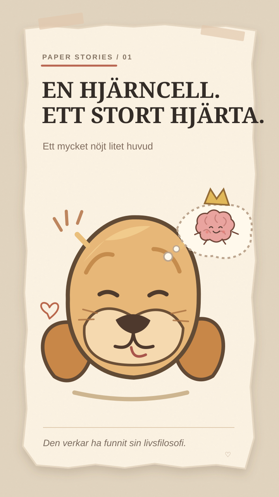
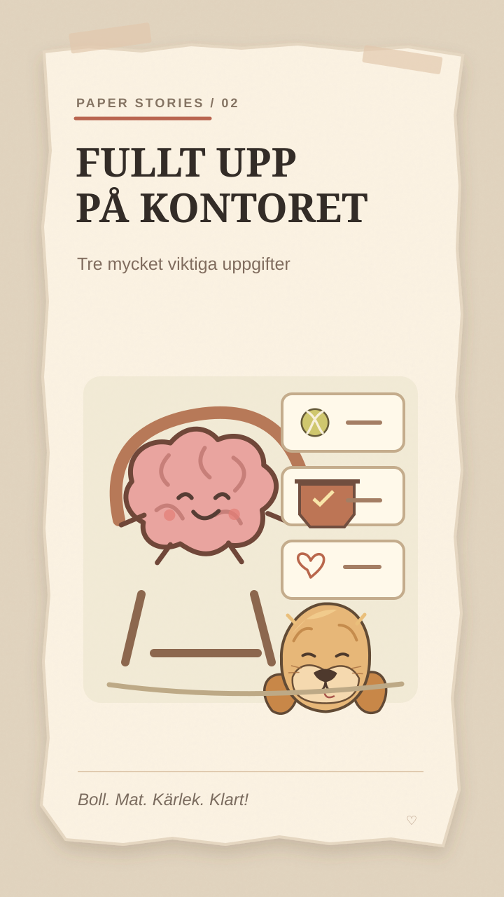
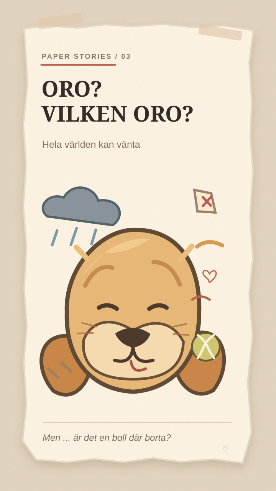
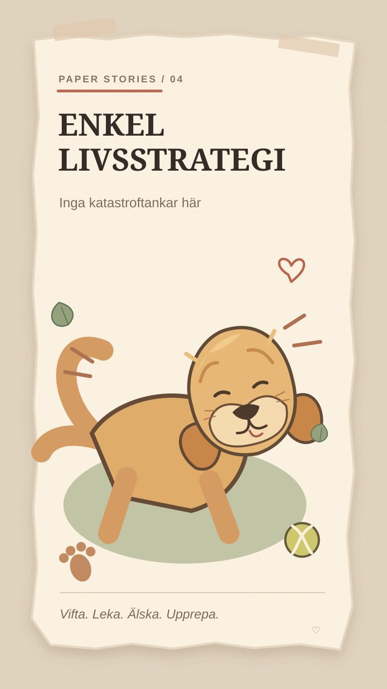
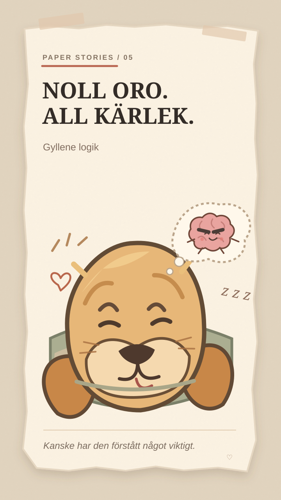

1. En enda hjärncell
Det sägs att en golden retriever har en enda hjärncell. Den verkar vara mycket nöjd med det.
5 sek
En varm, handritad och humoristisk story om en golden retriever som lever efter en mycket enkel filosofi: bollek, mat och obegränsad kärlek.
Öppna Paper Story StudioLadda ner projektfil
Det sägs att en golden retriever har en enda hjärncell. Den verkar vara mycket nöjd med det.
5 sek

Den cellen har tre viktiga uppdrag: hitta bollen, hitta maten och älska precis alla.
6 sek

Stress? Bekymmer? Nä, vänta nu ... är det där en BOLL? Vilken fantastisk dag!
6 sek

Ingen femårsplan. Inga katastroftankar. Bara: ska vi leka? Kan jag få en klapp? Och kanske ett kex?
7 sek

Tänk att vara så lycklig. En hjärncell. Noll oro. Och ett hjärta i XXL.
6 sek